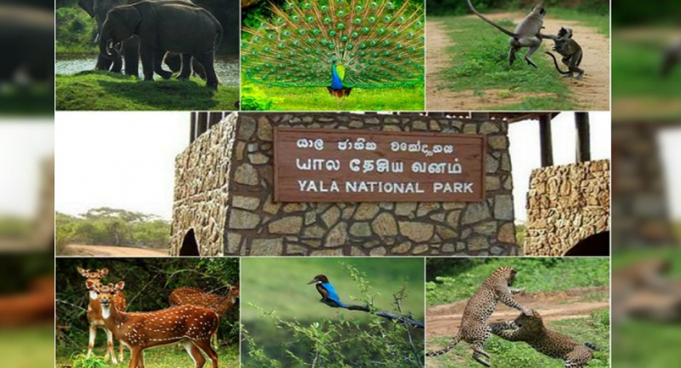

Yala National Park is the most visited and second largest national park in Sri Lanka,
bordering the Indian Ocean. The park consists of five blocks, two of which are now open
to the public, and also adjoining parks. The blocks have individual names such as, Ruhuna
National Park (Block 1), and Kumana National Park or 'Yala East' for the adjoining area.
It is situated in the southeast region of the country, and lies in Southern Province and
Uva Province. The park covers 979 square kilometres (378 sq mi) and is located about 300
kilometres (190 mi) from Colombo. Yala was designated as a wildlife sanctuary in 1900,
and, along with Wilpattu was one of the first two national parks in Sri Lanka, having been
designated in 1938. The park is best known for its variety of wild animals. It is important
for the conservation of Sri Lankan elephants, Sri Lankan leopards and aquatic birds.
There are six national parks and three wildlife sanctuaries in the vicinity of Yala. Among
the largest is Lunugamvehera National Park. The park is situated in the dry semi-arid climatic
region and rain is received mainly during the northeast monsoon. Yala hosts a variety of
ecosystems ranging from moist monsoon forests to freshwater and marine wetlands. It is one
of the 70 Important Bird Areas (IBAs) in Sri Lanka. Yala harbours 215 bird species including
six endemic species of Sri Lanka. The number of mammals that has been recorded from the park
is 44, and it has one of the highest leopard densities in the world.
The area around Yala has hosted several ancient civilizations. Two important pilgrim sites,
Sithulpahuwa and Magul Vihara, are situated within the park. The 2004 Indian Ocean tsunami
caused severe damage on the Yala National Park and 250 people died in its vicinity. The number
of visitors has been on the rise since 2009, after the security situation in the park improved.
|
 |